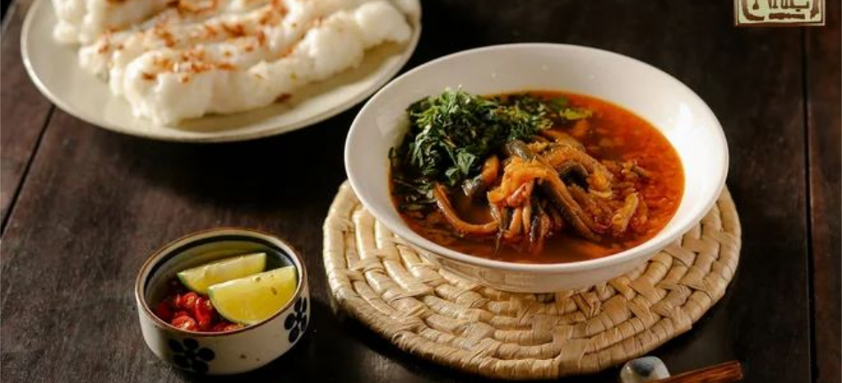

Khi nhắc đến ẩm thực, miền Trung ngay lập tức gợi lên những hương vị đặc trưng của vùng đất nắng gió, khô cằn nhưng lại vô cùng phong phú và đậm đà. Từ những món ăn dân dã đến các món cao cấp, ẩm thực miền Trung luôn mang trong mình cái hồn của vùng đất này, khiến ai từng thưởng thức cũng khó lòng quên.
Súp Lươn Nghệ An - Hương vị đặc trưng gắn liền với đất Vinh
Nhắc đến những món đặc sản Nghệ An ngon nổi tiếng, nhiều người sẽ nghĩ ngay đến món súp lươn. Món ăn này ban đầu thường khiến nhiều người e dè, ngại nếm thử nhưng khi thưởng thức qua thì lại thấy ngon, thấy ghiền và nhớ hoài cái hương vị đậm đà cay nồng khó cưỡng.
Nguyên liệu chính làm nên món súp lươn Nghệ An là lươn đồng thịt chắc, ngọt. Nước súp được ninh từ xương heo. Để gia tăng hương vị của món ăn, người ta còn cho thêm ớt. Bát súp lươn ngon đúng điệu xứ Nghệ phải có nước dùng đậm đà, thịt lươn mềm dai vừa phải, ngấm đủ gia vị. Nước súp hội đủ vị mặn, cay, ngọt của các thứ nguyên liệu quyện cùng vị của thịt lươn, hương thơm của rau mùi. Súp lươn Nghệ An thường được ăn kèm bánh mì, bánh mướt hoặc bánh đa. Món ăn này đã được kênh truyền hình Mỹ CNN miêu tả là 1 trong 7 món ăn sáng độc đáo trên thế giới.
Bún Bò Huế - Hương vị mà quên là đại tội đồ
Bún bò Huế xưa ra đời từ thời chúa Nguyễn Hoàng (khoảng thế kỷ thứ 16). Tương truyền, xưa có cô Bún xinh đẹp, giỏi giang, thạo nghề làm bún. Tại làng Vân Cù, cô Bún đã sáng tạo ra cách chế biến một món ăn mới: Lấy thịt bò nấu thành nước dùng cho món bún. Từ đó, món bún bò ra đời, được lưu giữ và phát triển qua nhiều thế hệ. Đến nay, bún bò Huế đã được cải biên với sự có mặt của nhiều nguyên liệu khác như giò heo, tiết lợn, chả cua,...

.png)